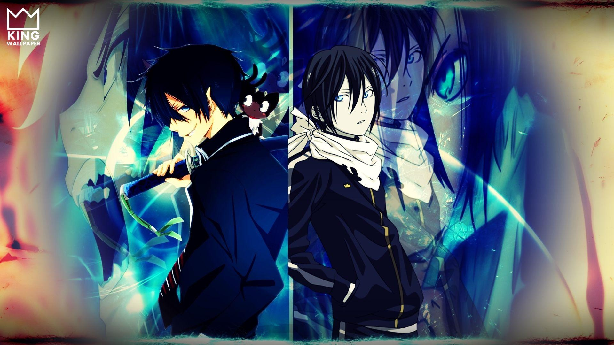

"Like I always say, can’t find a door? Make your own."
“When you give up, that's when the game ends.”
"People cannot win against their loneliness."

Noragami
A minor god seeking to gain widespread worship teams up with a human girl he saved to gain fame, recognition and at least one shrine dedicated to him.
Naruto
It tells the story of Naruto Uzumaki, a young ninja who seeks recognition from his peers and dreams of becoming the Hokage, the leader of his village.
Jujutsu Kaisen
Jujutsu Kaisen follows the story of Yuji Itadori, an ordinary boy who crosses paths with Megumi Fushiguro, a Jujutsu Sorcerer searching for a powerful Cursed Object known as Ryomen Sukuna's finger.
Dragon Ball
Initially, Goku was known to be an evil being. However, as soon as he lost all his memories, he became someone else. Befriending another lead character called Bulma, they both go on a quest to find the seven Dragon Balls.
Do You Know This
1. What is the name of the Curse occupying Yuji Itadori's body in "Jujutsu Kaisen"?
2. What two colors are used in the Amestris flag in "Fullmetal Alchemist"?
3. Who is Isabella's child by blood in "The Promised Neverland"?
4. What is All Might's Quirk called in "My Hero Academia"?